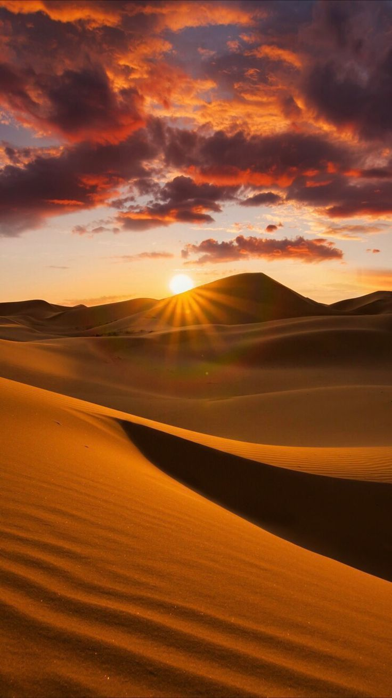
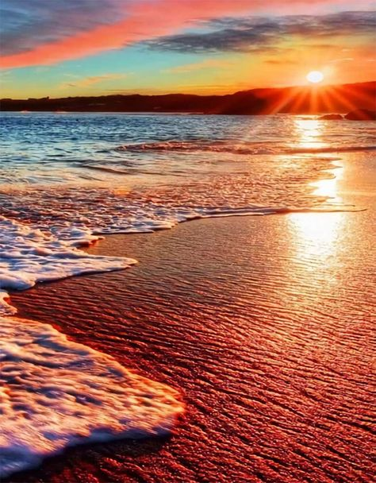
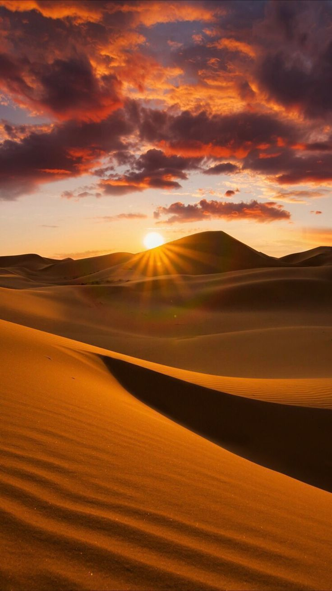
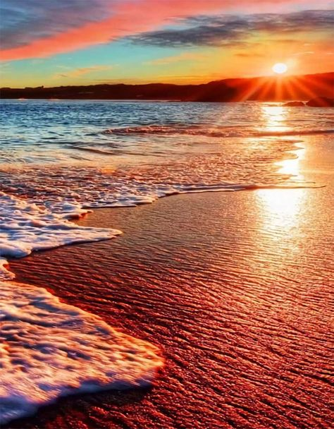

Le immagini posso essere inserite con diverse estensioni:
Consulta diapositiva pag.72 per alcuni link utili
Convertitore di immagini salvate su preferiti sotto Css, guardare diapositiva pag.73
 


